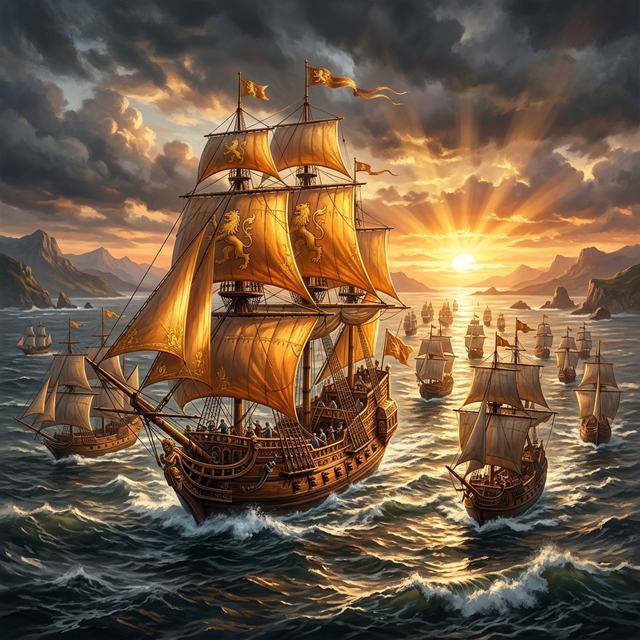

Từ một Thuyền Trưởng đơn độc điều khiển cả hạm đội,
đến mô hình phân quyền 3 tầng — nơi mỗi con tàu đều có người lái lèo vững vàng.
Khi một người cố gắng điều khiển cả hạm đội 10 con tàu với gần 100 thủy thủ — bão tố là điều không thể tránh khỏi.
Bị cuốn vào quá nhiều cuộc họp, chưa biết cách ủy quyền. Thường xuyên rơi vào trạng thái kiệt sức — vừa phải đảm bảo delivery vừa phải tạo động lực cho team.
Giữa SDM và PL tồn tại một "khoảng cách vô hình" khiến việc giao tiếp trở nên khó khăn. SDM thiếu tin tưởng, không tạo đủ sức ảnh hưởng cho PL.
10 PL với năng lực không đồng đều, không có thời gian coaching. SDM không có thời gian để đào tạo và phát triển đội ngũ kế cận.
Mô hình Đô Đốc – Thuyền Trưởng – Thủy Thủ: tận dụng sức mạnh của tầng giữa để tăng sức ảnh hưởng mà không cần quản lý vi mô.
Chiến lược tổng thể, định hướng hạm đội, quyết định lớn
Vận hành từng con tàu, quản lý thủy thủ đoàn, báo cáo lên Đô Đốc
Thực thi nhiệm vụ, phối hợp trong đội, phát triển kỹ năng
✨ SDM có thể tăng sức ảnh hưởng đến toàn bộ 100 members mà không cần phải trực tiếp họp hành vi mô — qua đòn bẩy của 10 PL.
Chuẩn Hóa & Xây Dựng Niềm Tin
Cần hiểu rõ năng lực PL, xóa bỏ khoảng cách vô hình giữa SDM và PL, thiết lập cơ sở phân quyền rõ ràng để đặt đúng người vào đúng dự án.
Dùng mô hình 9-box, Skill-Will để đánh giá 10 PL. Lập ma trận ghép điểm mạnh từng PL với yêu cầu dự án.
Định nghĩa rõ ranh giới: SDM lo chiến lược, PL lo vận hành. Chuẩn hóa JD, KPI và quy trình báo cáo Hourensou.
Tổ chức họp Vision Alignment và 1-1 để chia sẻ tầm nhìn, thiết lập sự cởi mở và tin cậy giữa SDM—PL.
Output: Bản đồ nhân sự rõ ràng, hệ thống KPI minh bạch và bắt đầu tạo dựng được niềm tin.
Trao Quyền, Đào Tạo & Coaching
PL cần được trang bị kỹ năng để không bị sốc áp lực, đồng thời SDM cần giảm tải các công việc sự vụ.
Break down các task, ủy quyền quản lý vận hành cho PL có năng lực tốt nhất trước.
Coaching 1-1 định kỳ, đặt câu hỏi để PL tự giải quyết vấn đề. Workshop kỹ năng quản lý.
SDM truyền thông điệp qua PL. Công khai ủng hộ quyết định PL trước team để xây uy tín.
SDM rút khỏi daily meeting, chuyển sang Dashboard, KPI và báo cáo nhanh.
Output: PL nắm vững kỹ năng, bắt đầu điều hành dự án. SDM được giảm tải họp hành, chỉ quản lý tổng thể.
Tối Ưu Hóa, Vận Hành Phân Tầng & Kế Cận
Đưa hệ thống vào vận hành độc lập, kéo đồng đều năng lực của 10 PL và chuẩn bị lứa nhân sự dự phòng.
PL hoàn toàn làm chủ. SDM chỉ tham gia Customer meeting, KPT, Sprint Review.
Tổ chức "Fuck-up Nights" / "Success Stories" — chia sẻ chéo giữa các PL để kéo đồng đều năng lực.
Hướng dẫn PL dùng 9-Box Grid tìm kiếm "Key members" và "Sub-PLs", tạo hệ thống kế thừa nhiều tầng.
Rà soát mô hình qua EES, CSS, survey ý kiến thành viên để tinh chỉnh liên tục.
Output: Hệ thống tự vận hành ổn định khi không có SDM, có sẵn đội ngũ PL mới dự phòng.
Mỗi hành trình đều có rủi ro. Chuẩn bị kỹ càng là chìa khóa để hạm đội vượt qua mọi sóng gió.
SDM có xu hướng chỉ tin tưởng/giao việc cho các PL cũ, "hợp gu" — tạo sự bất công và bỏ sót nhân tài.
Dùng Data, KPI khách quan và khung năng lực chuẩn để đánh giá thay vì cảm tính.
PL cảm thấy áp lực quá mức khi nhận quyền mà chưa đủ kỹ năng; Member không phục PL; hoặc PL lạm quyền.
Lộ trình ủy quyền tăng dần. Đào tạo kỹ năng quản lý. SDM trao quyền công khai và không can thiệp trực tiếp.
Giao quyền sai người. Thông tin truyền đạt SDM → PL → Member bị "tam sao thất bản".
Chuẩn hóa kênh thông tin. Giám sát chặt giai đoạn đầu. Thiết lập "checkpoint" can thiệp kịp thời.